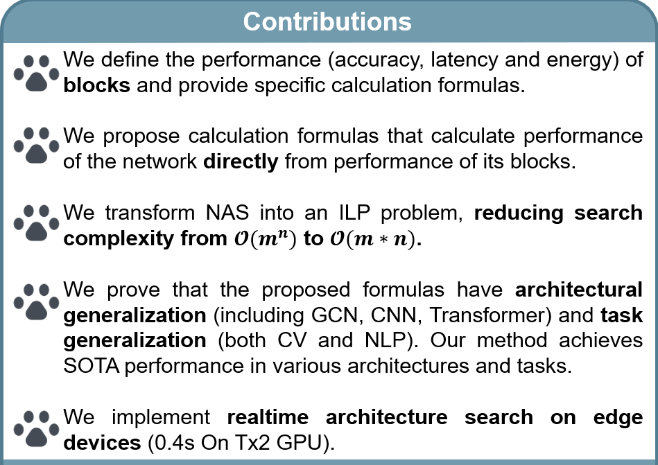

News
[ 22 Sep 2023 ] : MathNAS was accepted by NeurIPS 2023.
[ 31 Aug 2023 ] : Diff-LfD was accepted by CoRL 2023 as Oral (6.6%).
[ 26 Oct 2022 ] : Joined the LinS lab at NUS and started doing research.
Publications


Ah~μ
I am a senior student at the School of Computer Science and Technology, University of Science and Technology of China.
Nowadays I work as Research Assistant at NUS LinS Lab with Prof. Lin Shao.


[ 22 Sep 2023 ] : MathNAS was accepted by NeurIPS 2023.
[ 31 Aug 2023 ] : Diff-LfD was accepted by CoRL 2023 as Oral (6.6%).
[ 26 Oct 2022 ] : Joined the LinS lab at NUS and started doing research.